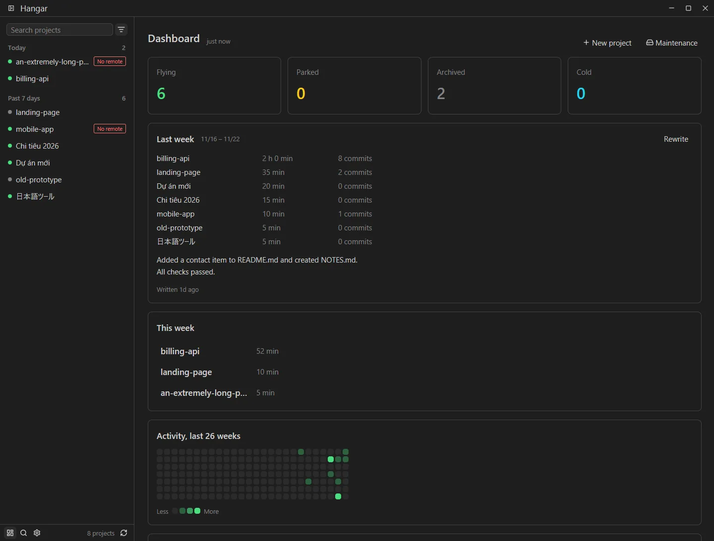
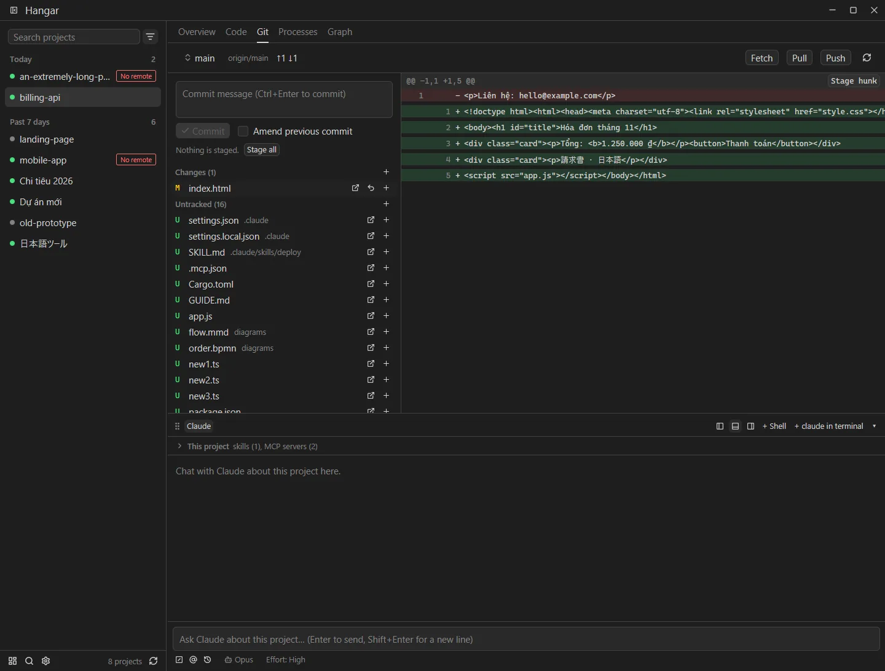

Everything a project needs, in one window
Hangar watches the whole fleet from the dashboard, and gives each project its own editor, Git, processes, code graph and Claude Code. Tools start only for the project you open.
The whole fleet at a glance
Counts of flying, parked, archived and cold projects, a 26-week activity heatmap, and a list of what needs you, most urgent first.
- **Needs attention:** work not pushed for more than 3 days, repos with no remote, dev servers left running in cold projects, and build folders over 200 MB.
- **This week and last week:** hours and tokens per project, and a short weekly report Claude Code writes from your commits. You can turn the report off.
- **Ctrl+K** jumps to any project or file, and search looks through every project at once.
- **Sidebar groups** by folder, by linked projects or by last activity, with filters in one menu.

An editor that installs its own language tools
Errors, completion, hover and go to definition for 12 languages. When a language server is missing, Hangar offers it as a language pack: one click, kept apart from your global tools.
- **Format on save** with rustfmt, Prettier, Ruff, gofmt and others.
- **Preview** Markdown as you type and HTML in a live web view. *Pick element* sends part of a page to Claude.
- **Problems** under the editor, and *Fix with Claude* writes the prompt for you.
- **Split the editor** by dragging tabs, view BPMN and Mermaid diagrams, and get suggestions even without a language server.

Git without the guesswork
Stage a whole file or a single hunk, commit with Ctrl+Enter, fetch, pull and push. Hangar runs your own git, so your credential helper and SSH keys work as usual.
- **Errors say what to do next:** a rejected push offers Pull, diverged branches offer rebase or merge.
- **Conflicts** are listed with Continue and Abort during a merge or rebase.
- **Never force-pushes,** and never asks for your password.

Claude Code, with you in charge
Chat with Claude Code inside the project. You see its thinking, its plan as a checklist, and every edit as a diff, and nothing changes until you choose Allow once, Always allow or Reject.
- **What was I doing?** reads the repo and tells you where you stopped.
- **Agents** take a task and work on their own branch in a separate worktree. Merge the result or throw it away.
- **Linked projects** are added to the chat, so Claude can read and edit across a front end and its API.
- **`/` and `@`** for commands, skills and files; pick the model and effort; see what the project's own `.claude` folder brings.

Pick up any Claude session again
One history button lists the Claude Code sessions saved for this project, newest first, with their title, age, number of prompts and branch.
- **Continue in the chat** and its history comes back, or open it in a terminal with `claude --resume`.
- **Rename** a session the way `/rename` does, or delete it for good after a second click.
- **New chat** starts fresh. Sessions from the terminal show up here too.

Find the dev server you forgot
See what runs in each project, on which ports, with CPU, memory and uptime, whether Hangar started it or another terminal did.
- **Port already in use?** Hangar names the process holding it and offers to stop it or run on the next free port.
- **Launchers** start a whole stack, the web and the API, with one click.
- **Stop** ends the whole process tree, after checking it is still the process Hangar started.
See what a change will break
Hangar indexes definitions, calls, imports and HTTP routes in Rust, TypeScript, JavaScript, Python and Go, for the project and the projects linked to it.
- **Save a file another project uses** and a strip names every place, with a button to ask Claude to update them all.
- **Linked projects** are suggested from path dependencies, package names and HTTP routes.
- **Claude reads the same graph** through a built-in MCP server instead of grepping files.
- **Map view** draws projects and their most used files; drag, zoom and click to open.
Reclaim the gigabytes
The size of `target` and `node_modules` in every project you stopped touching, largest first. Remove one with two clicks; Hangar never follows links and never deletes anything else.
- **Libraries:** outdated packages and known vulnerabilities across all projects, checked only when you click.
- **Archive with a reason,** and the graveyard card shows why projects end.
- **New project** writes a README, `CLAUDE.md`, `.gitignore` and a CI workflow for Rust, Node or Python.
Make it yours
Import the VS Code, Cursor or Zed theme you already use and it colours the whole window. Set text sizes, the code font and line spacing, with a live preview.
- **Four languages:** English, Tiếng Việt, 日本語 and 简体中文.
- **Claude Code plugins,** skills and MCP servers switched on per project.
- **Arrange the window:** dock the Claude panel left, right or below, fold the sidebar into a rail, and see every shortcut with Ctrl+/.
- **Sign in with a token** from `claude setup-token`, kept in the system keychain.
Try it on your own folders
Hangar is free. It reads your projects where they are and changes nothing until you ask.